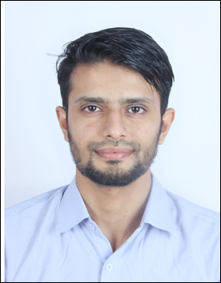

Nimansh Verma

Email: nimanshver27377@gmail.com
Summary
As a graduate of information technology and a postgraduate in computer science, I am well-versed in data structures, C, C++, and database management. I am versatile and rapidly pick up on new thoughts and ideas. Innovative thinker and problem solver committed to increasing performance. Works effectively with groups and frequently meets deadlines.
Education
- In 2012, 10th standard at Kendriya Vidyalaya No. 2, Jaipur, achieved an 8.0CGPA.
- In 2014, 12th standard at Central Academy, Jaipur, achieved an 81%.
- In 2019, graduated with a Bachelor of Information Technology from Jaipur Engineering College & Research Center with 67%.
- In 2022, completed Master of Technology in Computer Science from Thapar Institute of Engineering & Technology with 7.2cgpa.
Work Experience
I worked as an intern in Ericsson, India, for nine months, started on July 15, 2021.My responsibilities were mentioned as fellows:
- Testing the virtual machine server by taking measurements i.e running Background Traffic, Maxload, Selected measurement, etc.
- Maiden installation on the virtual and bare metal machine.
- Updating reports for all the test cases.
Skills
- Programming: C, C++, Python
- OS: Windows, Linux
- Database: MySQL
- Web Technology: HTML, CSS
Achievements
- Got scholarship under the Prime Minister's scholarship scheme for pursuing higher studies in 2016.
- Got offer letter from TCS for assistant software engineer in 2021.
- Qualified GATE examination in year 2020 & 2021
- Secured 1572 rank in Newton's Coding Challenge.
- Secured 90 percentile in AMCAT examination in year 2021.
Extra-Curricular Activites
- 1st Runner up in JECRC Sports MEET for playing football held in October 2015.
- Won 1st place in Street Theater at JAIRANGAM4 Jaipur Theater Festival 2015.
- Participated in street theatre in ANTARAGNI cultural festival organised by Indian Institute of Technology, Kanpur held in 2016.
- Organised birthday online celebration of my teamates during internship.
- Chosen as Mr.Fresher in first year of graduation.
My Hobbies
Contact Me